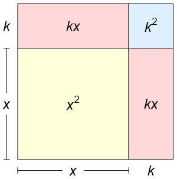

1. Basic algebra#
In this chapter, we look at some of the ideas and techniques that are needed to work with polynomials. Even in cases where students come to university with strong grades in mathematics, we find that these are areas that often neglected areas of preparation that let students down when attempting to solve harder problems that require algebraic manipulation. All of the mathematics covered in this chapter will be required in later work.
After completing the chapter you should be able to:
understand what is meant by the terms “root” and “factor”, and how the multiplicity of a root corresponds to the plotted shape of a polynomial.
complete the square for a quadratic and use this method to find roots and turning points.
expand a binomial \((x+y)^n\), where \(n\) is a counting number
1.1. Roots of polynomials#
A “root” of a polynomial \(p(x)\) is a solution to the problem \(p(x)=0\). These are the points where a plot of the polynomial meets the \(x\)-axis. For example, the polynomial shown in the figure below has two roots and therefore the curve meets the axis twice.
Fig. 1.1 The polynomial \(p(x)=x^2-3x+2\) has two roots, which are \(x=1,2\).#
If \(x_*\) is a root of a polynomial then \((x-x_*)\) is a factor, so the quadratic plotted above can be factorised as follows:
A polynomial of degree \(n\) can have at most \(n\) distinct roots. This can be understood by expanding out a product of factors:
However, a polynomial can have fewer roots than this maximum number. For example, there is no number that satisfies \(x^2+1=0\). The graph of this function lies everywhere above the \(x\)-axis.
Complex numbers
There is a branch of mathematics called complex number theory that supposes a solution to the problem \(x^2=1\) exists, in the form of an “imaginary number”. This starting assumption can be used to derive a whole host of interesting and useful mathematics, including a link between the exponential and trigonometric functions.
A polynomial can also have fewer distinct roots if some of the roots are repeated. For example, the quadratic plotted below has only one root, which appears as a quadratic factor. Since the polynomial does not change sign at this point, the curve does not cross the axis:

Fig. 1.2 The polynomial \(p(x)=x^2-2x+1\) has one root.
It can be factorised to \(p(x)=(x-1)^2\)#
The number of times that a factor associated with a root appears in the full factorisation of a polynomial is called the multiplicity of the root. For example, the following polynomial has a root \(x=0\) with multiplicity 3 and a root \(x=-1\) with multiplicity 2
Since the root \(x=0\) has odd multiplicity, the polynomial changes sign at this point and so the curve crosses the axis there. Since the root \(x=1\) has even multiplicity, the polynomial does not cross the curve at this point.
Fig. 1.3 The polynomial \(p(x)=x^5+2x^4+x^3\) has two roots.#
1.2. Completing the square#
When factorising quadratics we observe that in some cases we obtain a perfect square, i.e a result of the following form where \(k\) is a constant:
We may represent this result graphically by dissecting a square with sides \(x+k\), as shown below:
{kind=link}
Examples
The following equation is observed to be a perfect square by taking \(k=3\)
The following equation differs from a perfect square by only a constant:
If we start with a perfect square and multiply by a constant and/or add a constant, we will obtain another quadratic, which generally will not be a perfect square:
The converse is also true. If we start with any quadratic equation, we can convert it to the form shown on the left hand side of (1.5) by choosing appropriate values of \(k\), \(m\). This is called “completing the square”. We find that:
Exercise 1.1
Complete the square for each of the following cases:
(a) \(2x^2+6x+10\)
(b) \(3x^2+4x-5\)
Solution
(a)
(b)
Roots
Completing the square gives us the famous quadratic formula for the roots. Setting the quadratic equal to zero gives
We can see from the quadratic formula that the number of roots of this equation depends on the value of the discriminant
If \(\Delta>0\) the problem has two real roots
If \(\Delta=0\) the problem has one (repeated) real root
If \(\Delta<0\) the problem has no real roots
Turning point
The completed square form (1.6) also allows us to find the minimum/maximum of the quadratic, by observing that the squared factor is minimised when it is equal to zero. This occurs at the point
If \(a>0\) the point is a minimum, and if \(a<0\) then it is a maximum.
Exercise 1.2
Find the minimum/maximum of each of the following quadratics:
(a) \(2x^2+6x+10\)
(b) \(3x^2+4x-5\)
Solution
We completed the square for each of these expressions in the first exercise.
(a) \(\left(\frac{-3}{2},\frac{11}{2}\right)\) is a min
(b) \(\left(\frac{-2}{3},\frac{-19}{3}\right)\) is a min
1.3. Binomial expansion#
A binomial is a polynomial with two terms. Binomial expansion refers to computing powers of binomials \((x+y)^n\). In this section we will investigate only the case where n is a non-negative integer (counting number). We can compute the first few cases easily by hand:
You can see symmetry and patterns in the polynomials on the right hand side of the expansions. For instance, the combined powers are equal to the power of expansion \(n\) and the total number of terms is \((n+1)\). The general form of the expansion is shown below, where \(c_0,c_1,\dots, c_n\) are coefficients:
The exponents in each expansion term add up to \(n\) because we multiply together one element from every bracket in the expression \((x+y)(x+y)...(x+y)\). The coefficients are determined by the number of different ways that the elements can be combined.
For example, let’s consider the coefficient of \(x^4 y^2\) in the expansion of \((x+y)^6\). We need to find the number of ways of selecting four \(x\) values and two \(y\) values from the six brackets. It may be helpful to imagine the identical problem of picking exactly 4 blue balls and two red balls from six bins that each contain one blue and one red ball. The field of mathematics that considers problems of this type is called combinatorics.
The number of ways of choosing four items from 6 bins, regardless of ordering is given by
Can you figure out how this result is determined? The dropdown below provides an outline.
See details
Let’s start by selecting four of the six brackets to draw an \(x\) from. Since we take only one term from each bracket, the number of ways to do this is given by \(6\times 5\times 4 \times 3\).
However, some of these choices are equivalent. For example, picking \(x\) from bracket 1 and bracket 3 is equivalent to picking \(x\) from bracket 3 and bracket 1. For four items the number of possible orderings is \(4\times 3\times 2\times 1\).
The total number of uniques possibilities is therefore given by
You may be wondering about why we didn’t seem to account for the number of ways of choosing the \(y\) values. After dealing with the choice and ordering of 4 \(x\) values from 6 brackets we are left with the requirement to choose two \(y\) values from two brackets, regardless of ordering. There is only one way of doing this!
According to this combinatorial analysis, the \(k\)th coefficient in the binomial expansion is given by the result below, in which ! represents the factorial.
For example, substituting \(n=6\) and \(k=4\) gives the result
It can also be observed from this result that
For example, \(6\text{C}4 = 6\text{C}2\). This explains the coefficient symmetry that is observed from left to right in the binomial expansion.
Exercise 1.3
(a) Calculate \((x+y)^9\) using the binomial theorem
(b) Calculate the coefficient of the term \(x^2y^3\) in the expansion \((2x-3y)^5\)
(c) Find the constant term in the expansion \((x^2-1/x)^9\)
(d) Expand \((1+x-x^2)^7\) in ascending powers of \(x\) up to and including the term in \(x^3\)
Solution
(a)
(b) The term in \(x^2y^3\) is given by \(5\text{C}2\ (2x)^2(-3y)^3 = 10(2^2)(-3)^3x^2y^3\)
The coefficient is -1080
(c) The \(k\)th term in the expansion is
The constant term is given by \(k=3\), with coefficient \(9\text{C}3 \ (-1)^6 =84\)
(d)
1.3.1. Pascal’s triangle#
As an introduction to this section, try to prove the following result
Solution
It is easiest to start by writing out the result for the right hand side, which gives
Putting both terms over a common denominator gives
This result is equal to the left hand side of the expression that we set out to prove.
This is an example of a recursive formula, since it gives us the coefficients of the \((n+1)\)th power binomial in terms of the coefficients of the \(n\)th power binomial. Therefore the coefficients of each power can be written out successively, as shown in the table below.
The left-most and right-most values in each row are filled out according to the result
The remaining values are then filled out row by row, by using the recursive formula. Each value is calculated by adding the two values from the row above that are in the same column and the preceding column.
\(k=0\) |
\(k=1\) |
\(k=2\) |
\(k=3\) |
\(k=4\) |
\(k=5\) |
\(k=6\) |
\(k=7\) |
\(k=8\) |
\(k=9\) |
\(k=10\) |
|
|---|---|---|---|---|---|---|---|---|---|---|---|
\(n=0\) |
1 |
||||||||||
\(n=1\) |
1 |
1 |
|||||||||
\(n=2\) |
1 |
2 |
1 |
||||||||
\(n=3\) |
1 |
3 |
3 |
1 |
|||||||
\(n=4\) |
1 |
4 |
6 |
4 |
1 |
||||||
\(n=5\) |
1 |
5 |
10 |
10 |
5 |
1 |
|||||
\(n=6\) |
1 |
6 |
15 |
20 |
15 |
6 |
1 |
||||
\(n=7\) |
1 |
7 |
21 |
35 |
35 |
21 |
7 |
1 |
|||
\(n=8\) |
1 |
8 |
28 |
56 |
70 |
56 |
28 |
8 |
1 |
||
\(n=9\) |
1 |
9 |
36 |
84 |
126 |
126 |
84 |
36 |
9 |
1 |
|
\(n=10\) |
1 |
10 |
45 |
120 |
210 |
252 |
210 |
120 |
45 |
10 |
1 |